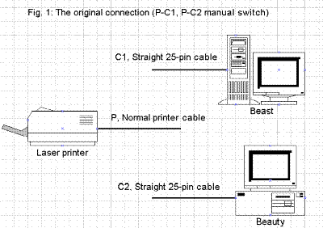
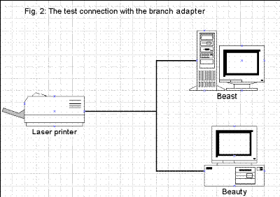

Hi TPC members!
The report from me this month is a result of my experiment. I fixed a printer cable branch adapter to connect the Beast (Mike's PC, a Gateway2000 P5-66) and Beauty (my PC, a Mitac 486DX4/100) directly to our Epson Action Laser 1500, but it resulted in FAILURE! I do not know whether this is common sense for PC users, but I hope this report gives a laugh to somebody. At least, the experiment was very fun for me and my skill at soldering is a little bit improved.
A corner of our PC room is filled with tangled cables. These cables connect PCs, peripheral devices, stereo set, a telephone, a Casio keyboard, and some home appliances. Mike and I are sharing one printer for our PCs. The connections between the printer and the two PCs are established by three separate cables as shown. I just wanted to try connecting two PCs directly to the printer to see how it would work. Some years ago, I did a similar experiment to connect two amplifiers (a TV's and a cassette tape deck's) to a single set of speakers. The result that time was not bad.
Without connecting or disconnecting the printer cable to/from the Beast (it is a full tower machine placed under the workbench/desk and it's troublesome to reach to the back side), I fixed two full connection cables (C1 and C2 in Fig. 1) to extend the PCs' parallel ports. Each time when we wanted to use the printer, we switched the printer cable connection to P-C1 and P-C2.
I thought if the signal from a PC to a printer is only unidirectional from a PC to a printer, it is no problem to always connect two or more PCs to one printer directly if the two PCs do not send signal to the printer at the same time. If two PCs could be always connected to the printer, we wouldn't have to change the troublesome connection.
So, I fixed a branch adapter. The connections are very simple to solder all 25 pins of D-sub female connector to two male connectors.
The result of the experiment was:
If two PCs are connected directly to one printer, the printer does not work if both PCs are turned on. If only one PC is turned on, the printer works OK (this is the equivalent connection between one PC and one printer, which means there's NO MEANING in having the branch adapter).
I guess:
When a PC is on, one or more pins are always pulled up or pulled down. This conflicts with the printer somehow and causes the problem. One PC is apparently trying to control the signal for the printer, while the other PC forces some pins always high or low. If someone knows about the parallel printer interface specifications, let me know some hints. Then I want to try adding some flip switches to the branch adapter and try again.
So, Mike and I now are using the original printer connection as shown in Figure 1. I now understand why PC shops are selling printer buffer/switcher devices.
See you again.
Algorithmica Japonica
September 1996
The Newsletter of the Tokyo PC Users Group
Submissions : Editor Mike Lloret